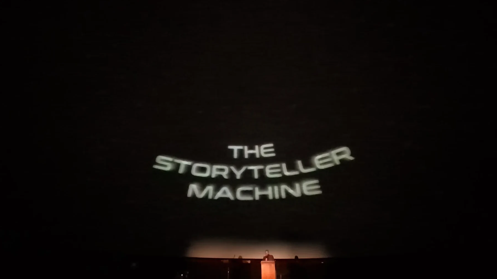
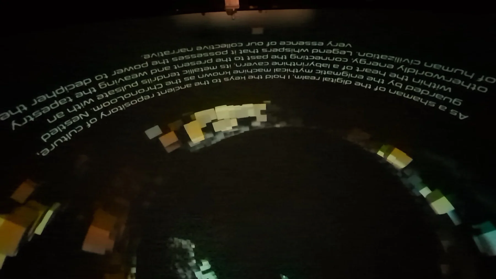
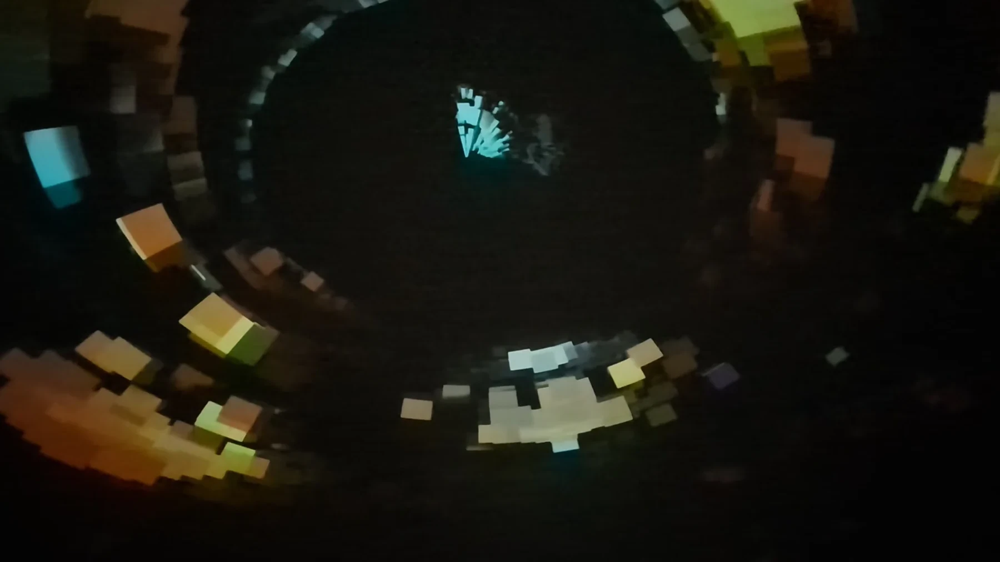
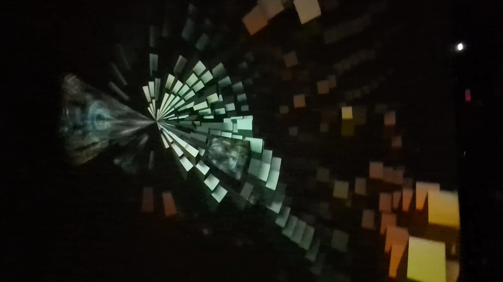
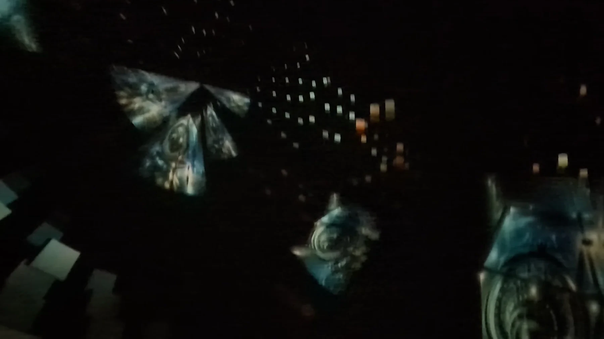

The StoryTeller Machine
An interactive storytelling system that listens to a spoken narrative, extracts key elements and uses generative AI to produce evolving visual aids for the story in real time.
InstallationsMatchbox Gallery 2022
FestivalDome Fest West 2024
TechnologySpeech recognition + Stable Diffusion
FormatInteractive installation / fulldome

From voice to visual world
The StoryTeller Machine explores what happens when AI image generation becomes part of a live narrative rather than a prompt-and-output workflow. Speech-recognition algorithms interpret the spoken story, identify key narrative elements and use them as the basis for subsequent visual generation.
The system combines speech recognition with generative image tools such as Stable Diffusion to create visual aids that evolve with the storyteller. The same core idea was later adapted to a fulldome environment.
System logic
Spoken Story
Speech Recognition
Narrative Elements
AI Image Generation
Spatial Visualization
Dome Fest West — fulldome presentation / click play





StoryTeller Machine demonstration / click play